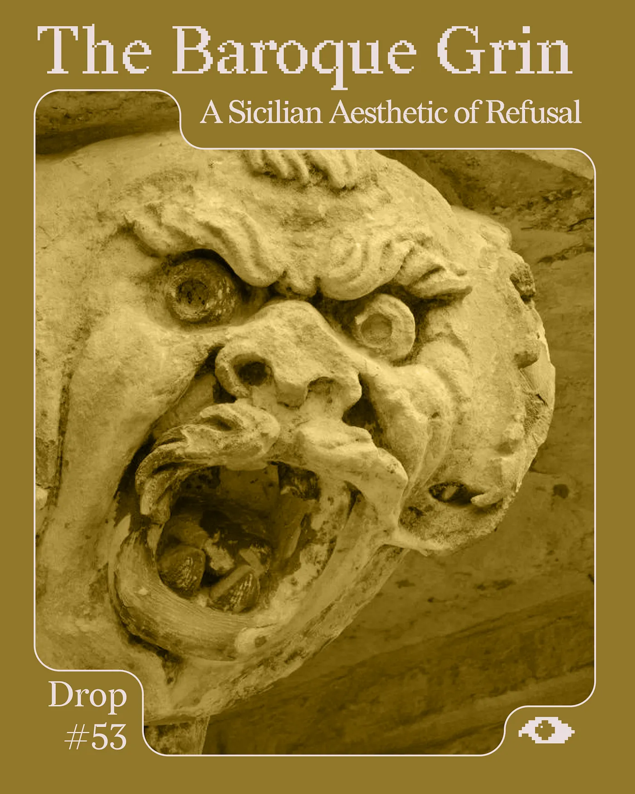
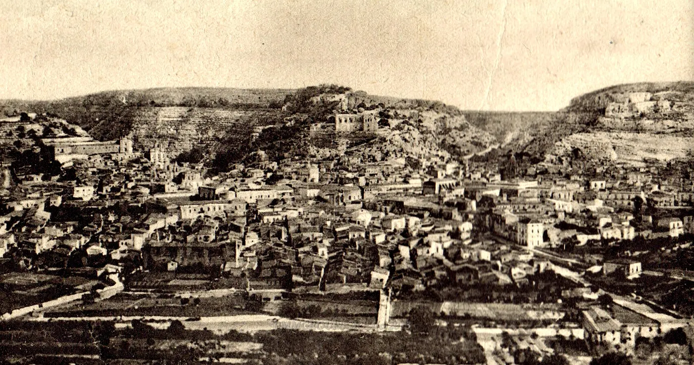
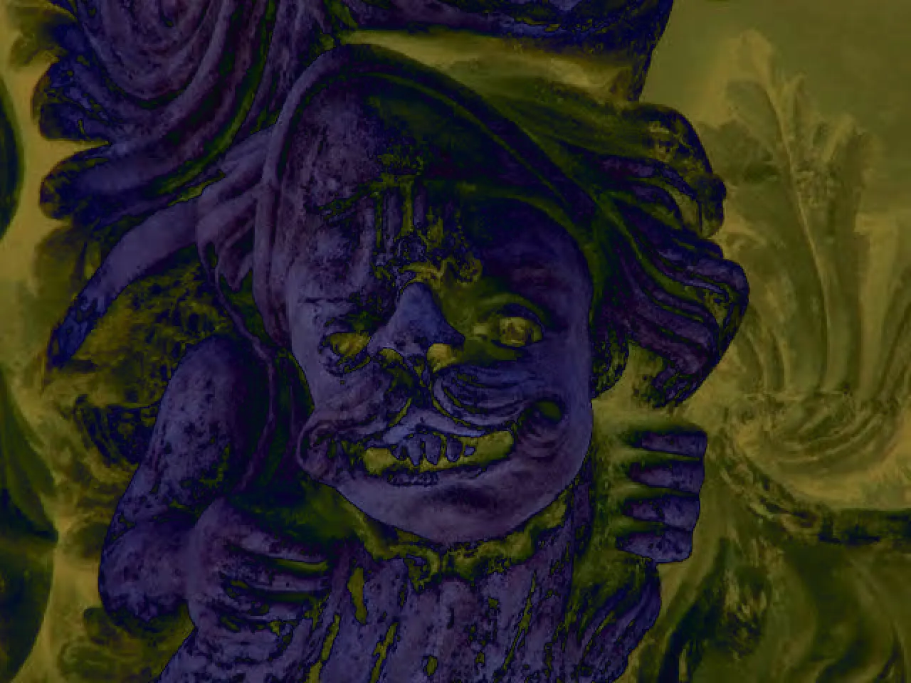
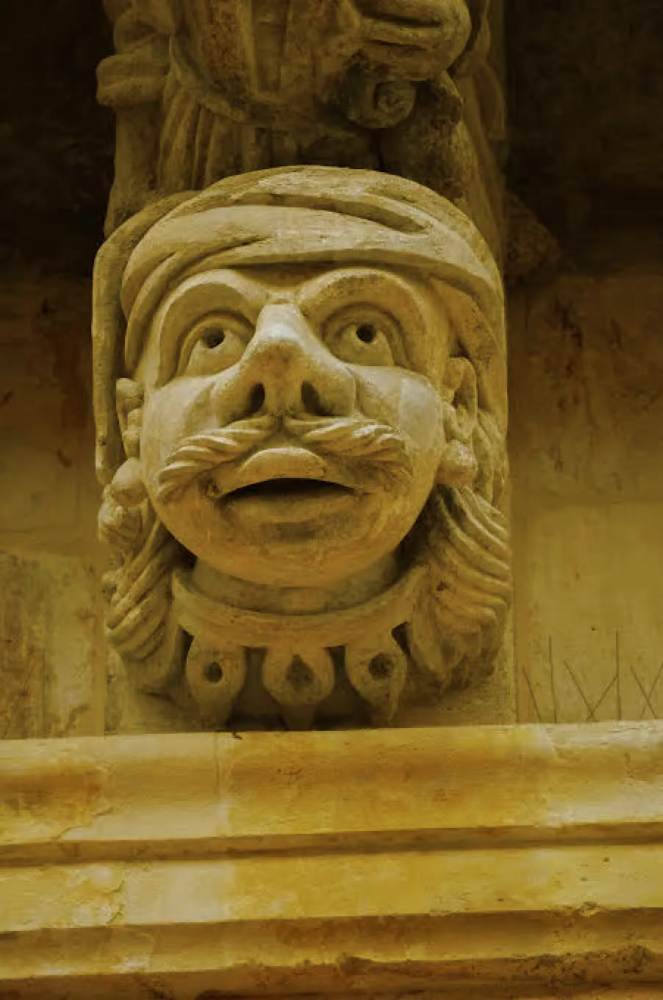
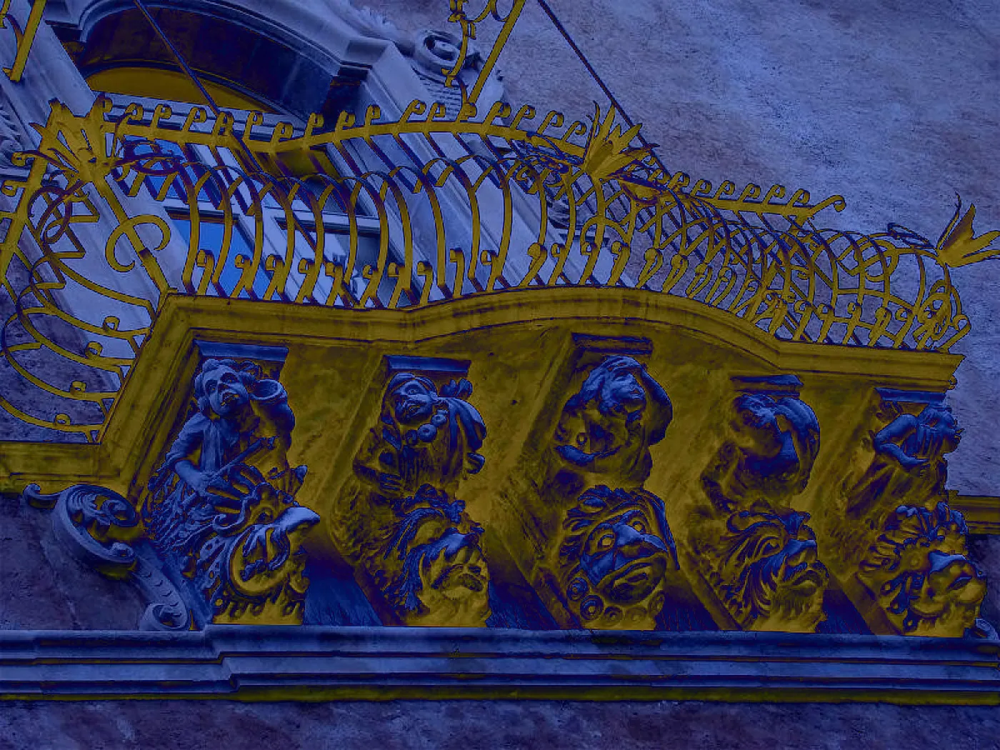
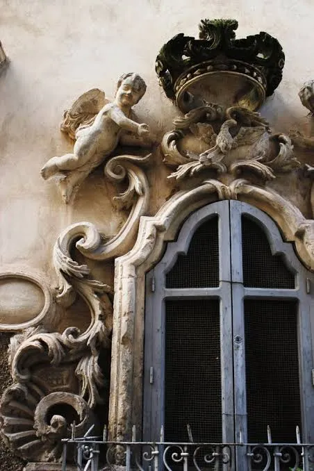
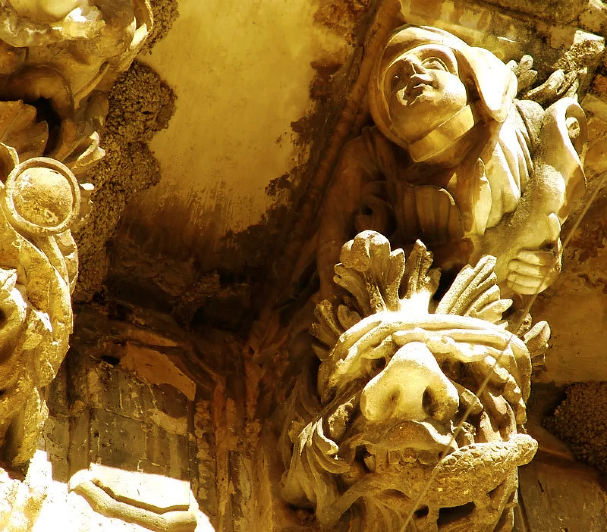
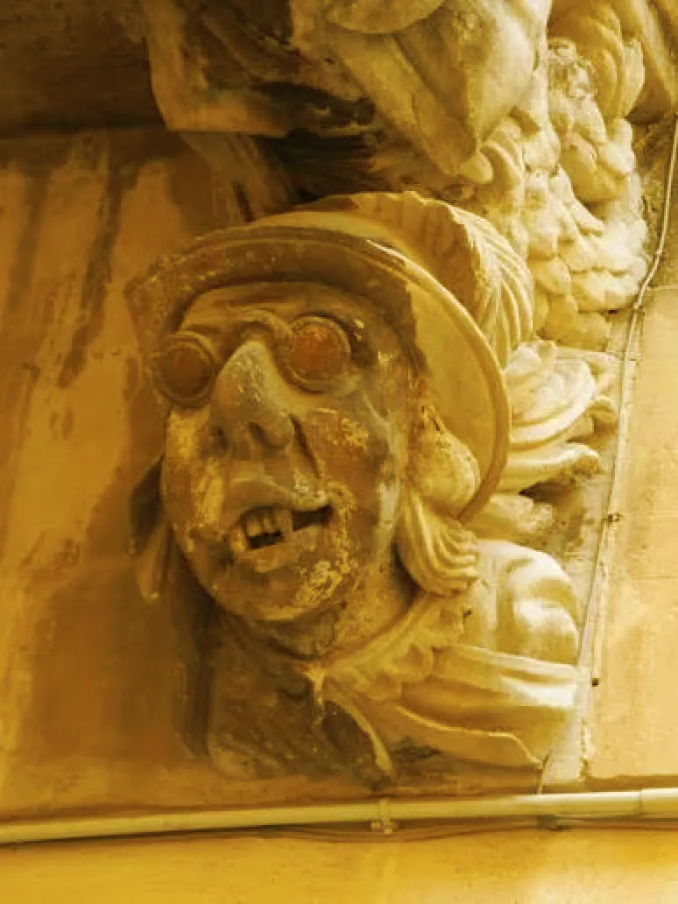
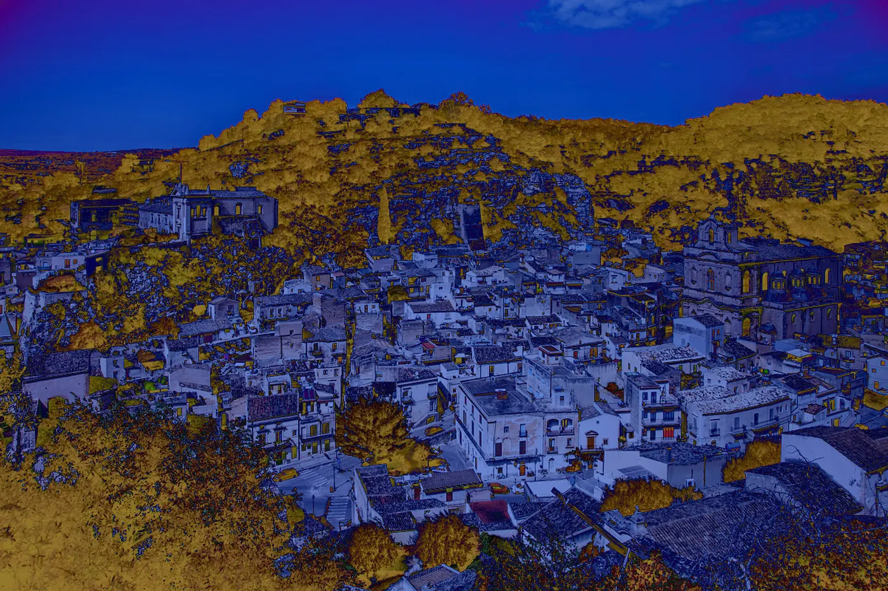

Drop #53 · July 23, 2026 · 16 min read
A Sicilian Aesthetic of Refusal
I’m happy to welcome Giovanni Padua to these pages with a piece that cuts into a question too often buried under aesthetics: what happens when a place becomes a product? The essay was originally written in Italian for Il Tascabile and appears here in English, translated by me and Claude.
Italy’s cultural landscape is structured around thousands of small and mid-sized towns, often called borghi, whose historic centers have been preserved or restored as sites of architectural significance. In southeastern Sicily, the towns of the Val di Noto (Scicli, Modica, Ragusa Ibla, Noto, Palazzolo Acreide, among others) were collectively inscribed as a UNESCO World Heritage Site in 2002 for their late-Baroque urban fabric, rebuilt almost entirely after the catastrophic earthquake of 1693. Over the past two decades, accelerated by the global success of the television series Il Commissario Montalbano (1999–2021), which used Scicli and its surroundings as primary filming locations, these towns have been absorbed into an economy almost wholly dependent on cultural tourism. The transformation described in this essay is not unique to Sicily: across Italy, from the Cinque Terre to Matera, the designation of cultural heritage has become inseparable from the pressures of gentrification, depopulation, and the conversion of inhabited places into seasonal destinations.
When Giovanni writes of “cultural towns,” he is describing a dispositif of governance and control across the peninsula. He does so by operationalizing the image of the Baroque mascarons, those grotesque stone faces that guard the entrances of noble palaces, as devices of power that have never stopped functioning. It is a singular reading of Baroque aesthetics, and one I find compelling: I think a profound truth about our times is encoded in the logic of this style. Last year, Giovanni invited me to the Mast Festival, a local youth-led festival in Scicli that brings together electronic music, culture, and critique for a few wonderful days. I spoke there about Baroque aesthetics too, and you can find the text that inspired that talk here.
Mast Festival is also proof that bleak, extractive touristification is not a destiny, and that re-signification is always possible. Support them if you happen to be around! With this Drop, we enter our s u m m e r b r e a k and will be back at the end of August <3
Giovanni Padua graduated in philosophy from the University of Turin. He works as a teacher and divides his time between event organizing and independent research on the textuality of cultural phenomena, urbanism, and image theory.
In a cultural landscape where funding and opportunities are continually shrinking, REINCANTAMENTO relies on volunteer work. If you like what we do and what we publish, you can help us stay independent by becoming a paid subscriber with the button below or making a donation through Ko-fi!

From the Noble Mascaron to the Postcard-City
The concept of refusal shapes both the forms of contemporary travel and the structure of hospitality, so that the city, transmuted into a tourist destination, becomes a device of exclusion and inclusion, in its material as well as its symbolic components. Refusal is the very form of modernity and its offshoots. On one hand, it represents what gets expelled from everyday life as superfluous or unwanted; on the other, it is the sign of a rupture, the limit imposed by the reality principle against illusion. On a historical plane, refusal takes the form of an epistemic break, the engine of those great eschatological narratives that, to open new horizons, deny and reject the legacies of the past. And yet every system is fatally condemned to produce waste: material, symbolic, ideological. Ecology, psychoanalysis, and mythology all try to discipline this residue, hoping to neutralize its excess and preserve the system’s own internal coherence. But it is in architecture that the spiritual surplus of an epoch finds shelter. No architectural gesture can lie.
The late-Baroque mascarons of the noble palazzo architecture of Scicli, in the province of Ragusa, are grotesque sculptural elements that loom over and frame the entrances of noble palaces. Read through Walter Benjamin’s reflections on history and Furio Jesi’s analyses of the symbols of power; they stand as an excellent emblem of a repelling power, one dedicated to denying any possibility of crossing the threshold.
Not only an architectural threshold, but a symbolic limit too: the mascaron functions as a warning, a guardian of the inviolability of the family majesty residing within the palace. From this vantage point, the expressive deformation of the late-Baroque figures is no mere ornamental excess; it is the externalization of a power that manifests itself in its exclusive and excluding dimension.

Before the 1693 earthquake, Scicli lived on the heights. From up there, it watched over the three valleys that now cradle the town like a stone trident: Santa Maria La Nova, San Bartolomeo, the Fiumara di Modica. For centuries, it had held to the ridges. Then the collapse came, and with it a second gesture: descending.
Scicli slid down, growing up against the churches that the local knights had erected in the preceding decades. The town settled where three torrential streams met. It was like choosing to live in the bed of a body that might wake. This is how Scicli took shape. After the apocalypse that shook the Val di Noto, hunger for catastrophe drew the town into the hollow of a possible flood, into the womb of a geological threat that was never fully tamed.
During the twentieth century, this threat was domesticated — or, more precisely, concealed. The torrents were covered over: caged in underground conduits, buried beneath asphalt and cobblestone. But they did not vanish. They go on flowing invisibly, like deep veins. The water that once broke through now waits. Beneath our feet, Scicli is still liquid. Its history is a hydraulic palimpsest.
To inhabit Scicli, then, means to live in tension. Not a balance, but a suspension. A town grown in the basin of catastrophe, built — in urban terms — as if trauma were not an exception but a condition. This is why its buildings always seem about to lean out over the street, why the alleys tighten, and why the façades erupt into form. Scicli answered fear with ostentation, never with silence.
This is where they appear — the mascarons — nested among the cagnuoli, the Sciclitan word that names the corbels of the wide balconies. In the words of Lutri and Ciappi in their work “Scicli: sguardo su un Sud inatteso”:
During the spring season, walking through the historic center of Scicli (...) the eye is caught by the marvelous folds given to the façades of so many late-Baroque eighteenth-century churches and palaces. These are decorated with mascarons and statues carved by local stonemasons (...) inclined to mock both the world of the professions and the religious authorities. The great, monstrous mascarons of Palazzo Beneventano beckon one upward toward San Matteo. The rich decorations of the balconies of Palazzo Fava, in the central Piazza Italia, jeer at the façade of the mother church.
Far from the political control of the Counts of Modica, the minor nobility of Scicli enjoyed broad freedoms and could therefore make easy show of its wealth to mock misfortune. Before the earthquake, in the bygone days handed down by local chronicles, it had been the Moorish pirates who terrorized the peasants along the coasts, and then the locusts.
The townspeople lived through these plagues as divine trials, ordeals they had survived, and for which revenge was owed.
For these reasons, the mascarons that adorn the noble balconies are often depictions of beheaded enemies, as if by synecdoche the head of a Moor could stand for all the suffering endured, petrified into a grotesque face. The knights’ irony was precise. Expressing a power that perceived itself as ancient and immovable, they deposited in those stone faces their contempt for nascent modernity and its new trades (the other catastrophe, ready to erode their domains) alongside their insult to what they regarded as a millennial plague: ecclesiastical power.
Against nature, against the new that advances and the old that will not yield, the Baroque mascarons jeer at the scientists and mock the church façades from the balconies, becoming avatars of limestone, receptacles of their patrons.

There is something deeply restless in the faces that surface on the corbels of the late-Baroque eighteenth-century balconies of southeastern Sicily. Those mascarons — often on the verge of turning into plants, with gaping mouths, lolling tongues, and gazes ecstatic or terrified — are more than decoration: they are the remains of a language that has lost its voice but not its power.
Within a genealogy of refusal — material, existential, symbolic — the mascarons offer themselves as a perfect synthesis of power and waste. For Walter Benjamin, every construction of history is also a violent selection, an act of exclusion. And these faces, deformed and spectacular, are not mere ornament: they are instruments of repulsion. Authentic power needs no explanation; it manifests itself in symbols that both impose and deny.
The Baroque mascaron sits above the threshold, but its gaze is turned outward. It is a refusal carved in stone, a warning to anyone who dares cross the limit. That limit is architectural but also semiotic: the grin does not welcome; it repels, and it does so by deforming the enemy. The mascaron is the very face of power, showing itself through its victims to bar their access.
This aesthetic of repulsion is not simply a legacy of the past; it continues to operate today, with other materials and other languages. Televised tourism — in particular the television phenomenon of Il Commissario Montalbano, the famous TV show inspired by Andrea Camilleri’s novel — has turned Scicli into a vast, impalpable mascaron: a postcard-city that seduces with its image but excludes through processes of gentrification and social selection. The city puts itself on display, a public space made private, where only what is sellable may appear.
The mascaron, then, is not merely an art object or a stylistic expression: it is a device of power that still today structures the urban imaginary, selecting the bodies that may inhabit and those that must disappear. To grasp its function means to unmask the present — not only as the avatar of a Baroque spirit never subdued, but as a passkey for observing more closely the contemporary strategies of exclusion in those places, the cultural towns, that define the true face of Italy.

The Mascarons and the Order After the Catastrophe
Sicilian late Baroque is not only an overflowing aesthetic: it is a machine for governing excess, for disciplining disorder. It is born as a plastic response to catastrophe and consolidates itself as a form of control. The apocalypse of 1693 generated not only ruin but a style: a strategy for the symbolic refounding of the world.
Today, that same machine has been switched back on. So Scicli is like every other place lashed by the rhetoric of cultural heritage. The town can be observed as a paradigm of an entire region, and even of Italy as a whole. The mechanism just mentioned was set in motion in recent years not by an earthquake but by a slower, more pervasive catastrophe: the crisis of local economies and the arrival of tourism as the sole grammar of survival. Celebrated as a resource, tourism has finally decided to show itself for what it is — a new language of power. Tourism rewrites places; it possesses them. And like the mascarons with their enemies, it turns the territory into a face to be put on show.
Scicli, Modica, Ragusa, Palazzolo Acreide: an archipelago of historic centers competing blow for blow in “beauty.” Every stone, every curve, every restored alley is destined not for living but for visibility. One does not restore to inhabit: one restores to display its beauty.
And what appears is a face turned outward, a compliant mask that must seduce the onlooker — the tourist — and repel whoever does not consume: the poor native, the irregular worker, the unproductive body. The whole city behaves like a great Baroque mascaron: it draws you in with a smile, hides the invisible, terrifies those not invited to the banquet.
It is no accident that the interiors of the late-Baroque palaces escape visual memory; it is no accident if what gets remembered is always and only their shameless façade; just as it is no accident if the urban imaginary is built today on curves and glimpses, on façades and openings. The tourist economy, in its most spectacular form, has no need of the inside of the house, only of the backdrop. The brazen exterior is all that counts, and it cannibalizes the private life behind it.

So the urban landscape becomes an ephemeral, competitive space, where every municipality is a rival, every act of restoration is a weapon, every event a spectacle, always conceived exclusively for those who can afford it.
Tourism is not neutral: it is a form of symbolic war, and like every war, it produces winners and losers. The winners are those who manage to stay inside the narrative of beauty: restaurateurs, hosts, cultural brands, self-proclaimed “enlightened” politicians. The losers remain offstage. Day laborers, longtime inhabitants pushed to the margins, voices that do not fall in tune with the festive register of territorial marketing.
Contemporary tourism, as Dean MacCannell shows, is not simple leisure but a ritual of authentication. The tourist seeks the “behind the scenes,” the truth of the place. And so the cities perform: they stage themselves, they construct backdrops that are credible precisely because they are curated, domesticated, always filtered.
In this sense, Scicli’s historic center becomes a device that regulates what may appear and what must remain hidden. The myth of the city as storefront was not handed down from above: it has been internalized, promoted, and defended by local actors themselves. Not by the marginal, but by a social constellation that moves among the hereditary petty bourgeoisie, widespread property ownership, and a new strain of project-making tied to the third sector, to cultural associations, to a romantic return to the provinces.

In Scicli, gentrification happens through symbolic transformation: the inhabitants are no longer citizens but facilitators and operators of the touristic process. Their identity is commodified, taken apart, reassembled into a narrative ready to be sold. The popular classes, migrant or native, are absorbed as invisible labor or expelled as elements incompatible with the new imaginary. The city dolls itself up, fully aware of its market value, and in that gesture, it reveals itself as tragically modern: ready to do anything in order not to disappear, even to sell off its own story.
Meanwhile, structural forms of exclusion and exploitation are perpetuated: in the exploitative agricultural labor of the so-called fascia trasformata (“transformed belt”), in the residential segregation of migrant families, in the real impossibility of living in the historic center for anyone without economic or symbolic capital. The water that flows beneath our feet is not only that of the buried torrents: it is the karstic river of living labor, of removed subjectivities, of the human residue that every city on display must expel to see itself in the mirror.

Anthropology of the Ephemeral: The Reversed Time of the Municipal Late Baroque
Ours is a late-Baroque age because its project-making is fundamentally ephemeral. In the cultural towns, the civic calendar follows an alternation of emotional peaks and ceremonies of power, timed to the rhythm of electoral conflict. Every election is a stasis, a civil war. In Stasis, Agamben shows how civil war is not a pathological deviation of the polis but its hidden foundation. Civil war is the dark underside of the constitution: it assembles the “internal enemy.”
This schema repeats itself in the spectacular government of tourist towns. The administration does not manage public affairs; it stages them. Each council negates the one before. Each mayor plays the Baroque artist, inaugurating squares, intoning hymns to beauty, orchestrating events like courtly feasts. Beneath the surface, the town remains fractured, corroded by local envies. The civil war in the cultural town is fought with grants proposal, slogans, and photos at the building site. A conflict without blood, but with victims: the excluded, reduced to spectators of a factional struggle over the symbolic rent of the territory. Every restoration, every festival becomes an economic appropriation of public space.
As in every civil war, the front line is not clear. It runs between families, inside neighborhoods, across generations. There is no longer an external enemy, but a conflict that corrodes from within. A polis that represents itself but does not recognize itself. That looks at itself in the display window and does not see itself. Like a mascaron, it shows the face; it occludes the belly.

Even in the most surveilled city, dense and surly and stratified places remain. If the citizens surrender, the spaces will not. They are keepers of what the dominant narrative cannot metabolize: memories, deviations, gestures. Every abandoned courtyard, every rickety bench sabotages the linearity of tourist programming. The inorganic resists, stubbornly, and its resistance tells us something: every place can be re-signified by those who inhabit it with other gazes, other needs. This is where the possibility of a different city opens up. Not the city put on show, but the one that shows itself through the cracks in the image. And here even the mascaron can change function. Its grin becomes the face of surplus, not repulsion. Its threshold becomes a chink of light.
The Face That Looks Back at Us

We delude ourselves that the mascaron is immobile, that its grin is mute. But it is not so. The mascaron looks at us. It is the petrified eye of the city, asking us: Who has the right to be here? Who may stay? Who may show themselves, and who must disappear? To recognize in it not a symbol of the past but a present-day mechanism means seeing beauty as a battlefield, restoration as strategy, the festival as a mask over hunger.
Its violence lies in this: turning the threshold into a stage, the wound into ornament, the trauma into a device. The point is not to save the city from aesthetics but to free aesthetics from rent. To imagine a new Baroque as generative surplus, not decoration. To recognize in the discarded, in the grotesque face, in the excluded wreckage, in the stone that does not get photographed, something other than the useless: a beginning. Only then will we be able to answer the mascaron. Not with another empty smile, but with a gaze that finally refuses to be possessed.